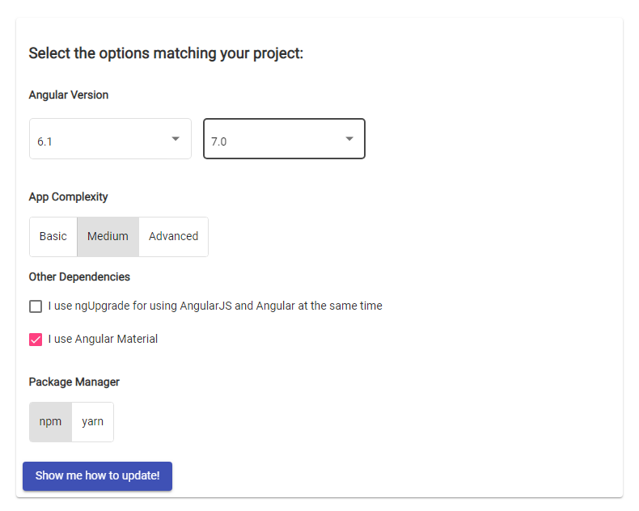

Introduzione ad Angular e TypeScript
Angular and beyond - DevMarche - Ancona, 7 dicembre 2018
Hello There!
- Alessio Marinelli
- Software Developer @ Antos srl
- Nerd, retrogamer, tech lover e vinyl maniac
- Organizzo eventi DevMarche
Cosa vedremo oggi
Informazioni base su Angular, la sua architettura e i tool fondamentali
TypeScript, il cugino enterprise di JavaScript
... ma vedremo poco codice
TypeScript
TypeScript è un superset di JavaScript
Aggiunge tipizzazione statica (opzionale), classi, interfacce e tutte le funzionalità di ECMAScript 6
È un linguaggio compilato object-oriented, pensato per essere robusto e affidabile
Progettato da Anders Hejlsberg (Microsoft) e rilasciato con licenza Apache 2.0
TypeScript vs JavaScript
| Object oriented | Prototype-based |
| Strong/Static typing | Weak/Dynamic typing |
| Compilato | Interpretato |
| Pesante | Leggero |
| .ts ⇨ .js | .js |
Un semplice esempio (TS)
class Greeter {
greeting: string;
constructor(message: string) {
this.greeting = message;
}
greet() {
return "Hello, " + this.greeting;
}
}
let greeter = new Greeter("world");
let button = document.createElement('button');
button.textContent = "Say Hello";
button.onclick = function() {
alert(greeter.greet());
}
document.body.appendChild(button);
www.typescriptlang.org/play/
Un semplice esempio (JS)
var Greeter = /** @class */ (function () {
function Greeter(message) {
this.greeting = message;
}
Greeter.prototype.greet = function () {
return "Hello, " + this.greeting;
};
return Greeter;
}());
var greeter = new Greeter("world");
var button = document.createElement('button');
button.textContent = "Say Hello";
button.onclick = function () {
alert(greeter.greet());
};
document.body.appendChild(button);
Un esempio "stellare" (TS)
class Person {
public race: Race = Race.Human;
public birthPlanet: string;
constructor(public name: string, public surname: string, public sex : Sex) {
}
}
class Jedi extends Person {
public readonly alignment: ForceAlignment;
public lightswordColor: string;
constructor(public name : string, public surname : string, public sex : Sex) {
super(name, surname, sex);
this.alignment = ForceAlignment.LightSide;
}
}
enum Sex {
Unknown,
Male,
Female
}
enum ForceAlignment {
LightSide,
DarkSide
}
enum Race {
Human,
Wookie,
Ewok,
Twilek,
Jawa,
Zabrak,
Droid,
MonCalamari
}
let luke = new Jedi("Luke", "Skywalker", Sex.Male);
luke.birthPlanet = "Polis Massa";
luke.lightswordColor = "blue";
luke.race = Race.Human;
let aayla = new Jedi("Aayla", "Secura", Sex.Female);
aayla.birthPlanet = "Ryloth";
aayla.lightswordColor = "green";
aayla.race = Race.Twilek;
Un esempio "stellare" (JS)
var __extends = (this && this.__extends) || (function () {
var extendStatics = function (d, b) {
extendStatics = Object.setPrototypeOf ||
({ __proto__: [] } instanceof Array && function (d, b) { d.__proto__ = b; }) ||
function (d, b) { for (var p in b) if (b.hasOwnProperty(p)) d[p] = b[p]; };
return extendStatics(d, b);
}
return function (d, b) {
extendStatics(d, b);
function __() { this.constructor = d; }
d.prototype = b === null ? Object.create(b) : (__.prototype = b.prototype, new __());
};
})();
var Person = /** @class */ (function () {
function Person(name, surname, sex) {
this.name = name;
this.surname = surname;
this.sex = sex;
this.race = Race.Human;
}
return Person;
}());
var Jedi = /** @class */ (function (_super) {
__extends(Jedi, _super);
function Jedi(name, surname, sex) {
var _this = _super.call(this, name, surname, sex) || this;
_this.name = name;
_this.surname = surname;
_this.sex = sex;
_this.alignment = ForceAlignment.LightSide;
return _this;
}
return Jedi;
}(Person));
var Sex;
(function (Sex) {
Sex[Sex["Unknown"] = 0] = "Unknown";
Sex[Sex["Male"] = 1] = "Male";
Sex[Sex["Female"] = 2] = "Female";
})(Sex || (Sex = {}));
var ForceAlignment;
(function (ForceAlignment) {
ForceAlignment[ForceAlignment["LightSide"] = 0] = "LightSide";
ForceAlignment[ForceAlignment["DarkSide"] = 1] = "DarkSide";
})(ForceAlignment || (ForceAlignment = {}));
var Race;
(function (Race) {
Race[Race["Human"] = 0] = "Human";
Race[Race["Wookie"] = 1] = "Wookie";
Race[Race["Ewok"] = 2] = "Ewok";
Race[Race["Twilek"] = 3] = "Twilek";
Race[Race["Jawa"] = 4] = "Jawa";
Race[Race["Zabrak"] = 5] = "Zabrak";
Race[Race["Droid"] = 6] = "Droid";
Race[Race["MonCalamari"] = 7] = "MonCalamari";
})(Race || (Race = {}));
var luke = new Jedi("Luke", "Skywalker", Sex.Male);
luke.birthPlanet = "Polis Massa";
luke.lightswordColor = "blue";
luke.race = Race.Human;
var aayla = new Jedi("Aayla", "Secura", Sex.Female);
aayla.birthPlanet = "Ryloth";
aayla.lightswordColor = "green";
aayla.race = Race.Twilek;
Codice TypeScript
| Codice pulito e leggibile |
| Più facile da testare e correggere |
| Più facile da estendere e manutenere |
| Anche all'interno di un team |
| Permette l'impiego di strumenti IDE avanzati |
| Perfetto (anche) per grandi progetti |
Angular
Angular è una piattaforma open source per lo sviluppo web basata su TypeScript
Nasce nei laboratori Google nel 2016 come riscrittura completa del framework AngularJS
Tecnologia abilitante per lo sviluppo di Single Page Applications
Rilasciato sotto licenza MIT
Framework o piattaforma?
“It's both a platform and a framework.-Bhojendra Rauniyar stackoverflow.com/a/50308856
When you use it for web application, you may call it a framework.
But when you use it for web, iPhone, android or any mobile, you may call it a platform. [...]
So, the platform can be defined as a framework which can be used across multiple systems.”
Principi ispiratori
| Modernità |
| Riduzione della curva di apprendimento |
| Massima modularità |
| Alte prestazioni |
| Mobile first |
| Toolchain integrata e completa |
Architettura Angular
Una app Angular è composta da moduli (chiamati NgModules) che forniscono un contesto di compilazione ad un set di componenti logicamente correlati tra loro.
Ogni app ha almeno un modulo root e uno o più moduli feature.
Ogni modulo può utilizzare o esporre funzionalità a altri moduli
Moduli
Una app Angular è composta da moduli (chiamati NgModules) che forniscono un contesto di compilazione ad un set di componenti logicamente correlati tra loro.
Ogni app ha almeno un modulo root e uno o più moduli feature.
Ogni modulo può utilizzare o esporre funzionalità a altri moduli
Modulo Root
import { NgModule } from '@angular/core';
import { BrowserModule } from '@angular/platform-browser';
import { AppComponent } from './app.component';
@NgModule({
imports: [ BrowserModule ], /* features imported from other modules */
providers: [], /* creators of services that will be available in the app */
declarations: [ AppComponent ], /* components, directives and pipes that belong to the module */
exports: [ AppComponent ], /* subset of declarations that will be usable by other modules */
bootstrap: [ AppComponent ] /* the main application view -only for the root NgModule- */
})
export class AppModule { }
Un NgModule contiene componenti e fornisce loro un contesto di compilazione
Componenti
Un component è un elemento che controlla una porzione di schermo chiamata view
Un component implementa la logica applicativa e interagisce con la sua rappresentazione grafica (chiamato template) tramite un set di proprietà e metodi
Definisce di quali servizi ha bisogno e come verrà referenziato in HTML
Un componente stellare
@Component({
selector: 'app-jedi-list',
templateUrl: './jedi-list.component.html',
providers: [ JediService ]
})
export class JediListComponent implements OnInit {
jedis: Jedi[];
selectedJedi: Jedi;
constructor(private service: JediService) { }
ngOnInit() {
this.jedis = this.service.getJedis();
}
selectJedi(jedi: Jedi) { this.selectedJedi = jedi; }
}
HTML:
Template
Bounty killers wishlist
-
{{ jedi.surname | uppercase }} {{ jedi.name }}
EMPEROR WANTS HIM ALIVE
Un template è un file che contiene tag HTML, direttive Angular, variabili e metodi in binding con il componente e trasformazioni chiamate pipe
Servizi
import { Injectable } from '@angular/core';
import { Jedi } from './jedi';
import { JEDIS } from './mock-jedis';
@Injectable({ providedIn: 'root' })
export class JediService {
private jedis: Jedi[] = [];
constructor() { }
getJedis() {
this.jedis = JEDIS;
return this.jedis;
}
}Un service è un generico fornitore di funzionalità che permette di scorporare dalla logica contenuta nel componente alcune funzioni specifiche e riusabili
WRAP UP

Tool
VS Code + Angular Language Service
Angular CLI
Karma (unit testing)
Protractor (e2e testing)
Aggiornamenti guidati update.angular.io
Angular CLI
È uno strumento a riga di comando per inizializzare, sviluppare l'architettura e manutenere app Angular
- ng new myapp
- ng generate [component|service|...]
- ng serve
- ng build
- ng update
- ng ...
update.angular.io
È una guida online per aiutare il dev ad aggiornare le librerie principali
Cosa abbiamo visto oggi?
- Cos'è TypeScript e perché è perfetto in ambito enterprise
- Cos'è Angular e quali elementi principali ne compongono l'architettura
- Quali sono i tool principali a disposizione dello sviluppatore Angular
Domande?
Qualche link
- Angular official site: angular.io
- TypeScript official site: www.typescriptlang.org
- ECMAScript 6 Features: es6-features.org
- DevMarche: dev.marche.it/tag/angular
- Slide e demo: github.com/defkon1